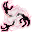

ワールドバインダー Worldbinder
英語版 CrawlWiki の記事「Worldbinder」(0.28 向け、2022-04-12 版)の翻訳です。原文の著者は編集履歴をご覧ください。
この記事は 0.28 の時点の内容で、最新の 0.34 とは違うところがあるかもしれません。
| ワールドバインダー x  | |
|---|---|
| HP | 26-54 |
| HD | 8 |
| XP | 514 |
| 速度 | 14 |
| AC | 12 |
| EV | 4 |
| 意志力 | 60 |
| 攻撃1 | 8 (打撃: 通常) |
| 攻撃2 | 8 (打撃: 通常)
|
| 耐性 | rPois+++ rDrown rMiasma rN+++ rTorm |
| 弱点 | なし |
| 生息地 | 陸上 |
| 知能 | 動物並み |
| 使用 | 扉を開ける |
| 分類 | 非生物 |
| 体格 | 小さい |
| 種類 | ワールドバインダー、ワールドバインダー |
| フラグ | 飛行 呼吸しない |

| 濃い霧の雲で、かすかな弱々しい鉤爪が絶えず伸びてきては霧の中へと消えていく。脅かされると、現実と現実の狭間の虚無に追放された生物たちを呼び出し、身を守らせる。 |
基本情報
ワールドバインダーは、迷宮のほかの分岐から格下の生き物を呼び寄せる、うっとうしい召喚役だ。本体はもろく、ほぼ無害だが、足が速いので追いかけるのは骨が折れる。アビスに現れる。
呪文
小技
- 自分から進んでアビスに入ったキャラクターなら、ワールドバインダーはほとんど脅威にならない。呼び出されるモンスターに特に危険なものはいないからだ。悪くても、球体の蜘蛛の呪文で大きなダメージを受けたり、宝物庫の警告者に番兵の標的をかけられたり(アビスではかなり困る)、マンティコアに逆棘を打ち込まれて動くたびに痛い思いをしたりする程度だ。
- 一方、意に反してアビスへ追放されたキャラクターは、ワールドバインダーが召喚を始めると大変なことになりかねない。いずれにせよ、ワールドバインダーは火炎・冷気・電撃への耐性を持たないので、召喚されたものは放っておき、ジャベリンやボルト系の呪文、強力な攻撃用のワンドで、もろい召喚主を仕留めるのがいちばんだ。
- どの召喚役でもそうだが、ワールドバインダーが死ねば、呼び出されたものはすべて消える。